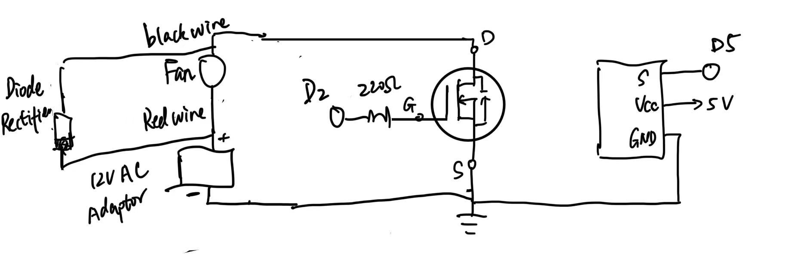
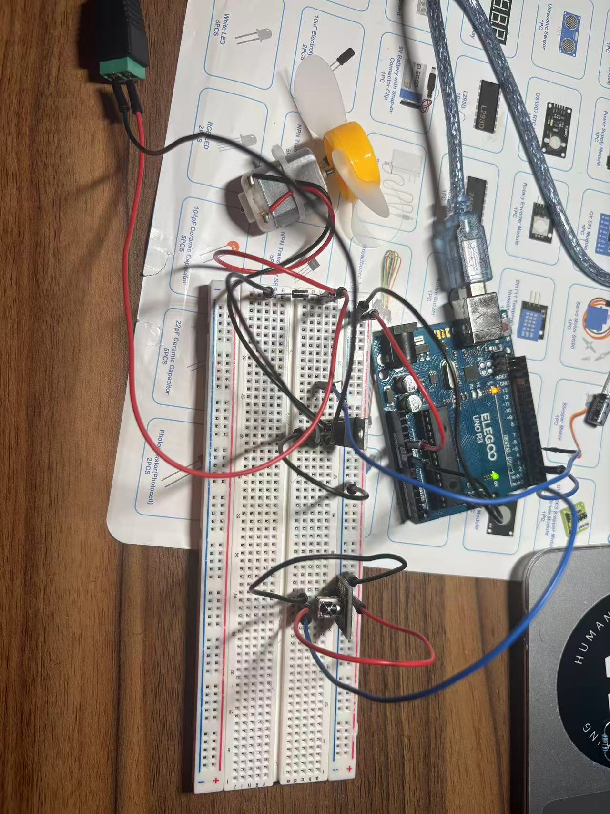
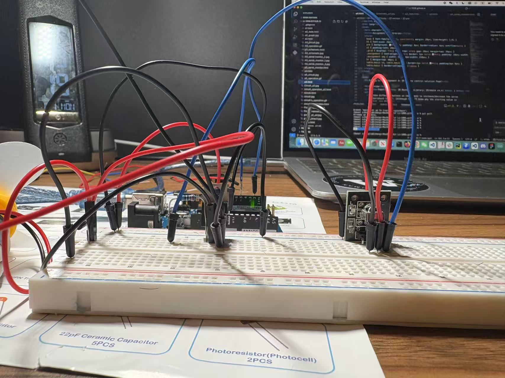
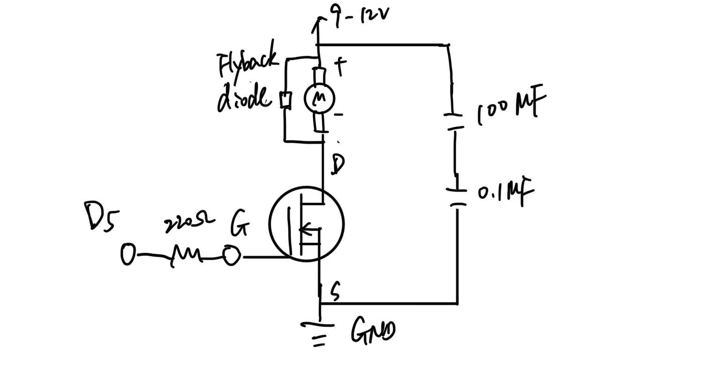
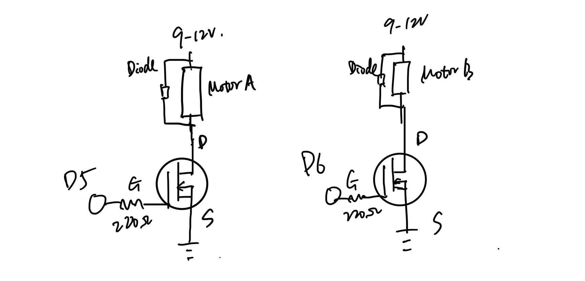

Schematic

Circuit


Circuit Operation


The entire gif file was too large to load in its entirety, so I split it into two parts.
Schematic Explanation:
In this IR-controlled fan circuit, an Arduino UNO sends PWM signals from digital pin 5 to the Gate of an N-channel MOSFET through a 220 Ω resistor to limit inrush current. The fan’s positive lead connects to +12 V, and its negative lead connects to the MOSFET’s Drain; the Source connects to system ground shared with both the Arduino and the 12 V power supply.
A flyback diode is placed across the fan terminals (cathode to +12 V, anode to Drain) to absorb voltage spikes when the motor is switched off. The IR receiver outputs decoded signals from its OUT pin to Arduino D2, with VCC and GND connected to 5 V and GND respectively.



The entire gif file was too large to load in its entirety, so I split it into two parts.
// IRremote v3.x/v4.x use <IRremote.hpp> (v2.x used <IRremote.h>)
#include <IRremote.hpp>
#define IR_RECEIVE_PIN 2
#define FAN_PWM_PIN 5
#define BAUD 9600
// Hex codes must match your remote; adjust after reading Serial Monitor prints.
const uint8_t CMD_STOP = 0x46; // stop
const uint8_t CMD_LOW = 0x0C; // ~30%
const uint8_t CMD_MID = 0x18; // ~60%
const uint8_t CMD_HIGH = 0x5E; // 100%
const uint8_t LEVEL_STOP = 0;
const uint8_t LEVEL_LOW = 77; // ≈30%
const uint8_t LEVEL_MID = 153; // ≈60%
const uint8_t LEVEL_HIGH = 255; // 100%
uint8_t currentPwm = LEVEL_STOP;
void applyPwm(uint8_t level) {
currentPwm = level;
analogWrite(FAN_PWM_PIN, currentPwm);
}
void setup() {
Serial.begin(BAUD);
delay(200);
IrReceiver.begin(IR_RECEIVE_PIN, ENABLE_LED_FEEDBACK);
pinMode(FAN_PWM_PIN, OUTPUT);
applyPwm(LEVEL_STOP);
Serial.println(F("Ready. Use mapped keys (STOP/LOW/MID/HIGH)."));
}
void loop() {
if (!IrReceiver.decode()) return;
if (IrReceiver.decodedIRData.flags & IRDATA_FLAGS_IS_REPEAT) {
IrReceiver.resume();
return;
}
uint8_t cmd = IrReceiver.decodedIRData.command;
Serial.print(F("Recv cmd 0x")); Serial.println(cmd, HEX);
if (cmd == CMD_STOP) applyPwm(LEVEL_STOP);
else if (cmd == CMD_LOW) applyPwm(LEVEL_LOW);
else if (cmd == CMD_MID) applyPwm(LEVEL_MID);
else if (cmd == CMD_HIGH) applyPwm(LEVEL_HIGH);
else {
Serial.print(F("Unknown cmd, keep current PWM: 0x"));
Serial.println(cmd, HEX);
}
IrReceiver.resume();
}Answer:
The absolute maximum continuous drain current (between pins 2 and 3) for the MOSFET is approximately 37.2 A at 25 °C under ideal cooling conditions (“infinite heatsink”). Exceeding this current would raise the junction temperature above 150 °C and could damage the device.


// Example pseudocode for dual motor control
int IN1=8, IN2=9, ENA=5;
int IN3=10, IN4=11, ENB=6;
void setup(){
pinMode(IN1,OUTPUT); pinMode(IN2,OUTPUT); pinMode(ENA,OUTPUT);
pinMode(IN3,OUTPUT); pinMode(IN4,OUTPUT); pinMode(ENB,OUTPUT);
}
void motorA_forward(int pwm){ digitalWrite(IN1,HIGH); digitalWrite(IN2,LOW); analogWrite(ENA,pwm); }
void motorA_backward(int pwm){digitalWrite(IN1,LOW); digitalWrite(IN2,HIGH); analogWrite(ENA,pwm); }
void motorB_forward(int pwm){ digitalWrite(IN3,HIGH); digitalWrite(IN4,LOW); analogWrite(ENB,pwm); }
void motorB_backward(int pwm){digitalWrite(IN3,LOW); digitalWrite(IN4,HIGH); analogWrite(ENB,pwm); }
void loop(){
motorA_forward(200); motorB_forward(200); delay(2000);
motorA_backward(200); motorB_backward(200); delay(2000);
motorA_forward(200); motorB_backward(200); delay(2000);
motorA_backward(200); motorB_forward(200); delay(2000);
analogWrite(ENA,0); analogWrite(ENB,0); delay(1000);
}No.